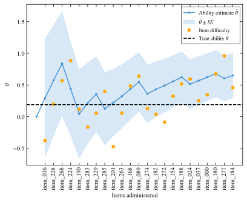
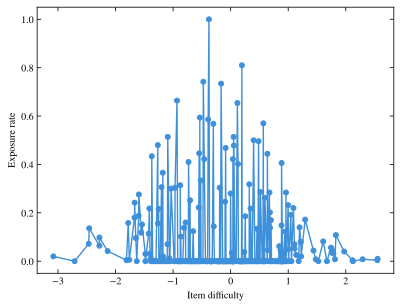

Running Simulations#
A simulation study gives a computerized adaptive test to simulated examinees and compares the final ability estimates with the examinees’ true abilities. This guide builds a test, runs it on a generated population and on recorded responses, reads the result, compares strategies over replications and plots them. The Introduction explains the CAT loop, and Terms and Notation lists the terms used here.
Build the Test#
A test is an item bank and four strategies: an initializer gives the first ability estimate, a
selector chooses each item, an estimator updates the estimate after each response and a
stopper ends the test. A CatEngine holds them.
import numpy
from catsim import CatEngine, ItemBank, simulate
from catsim.estimation import EAPEstimator
from catsim.initialization import FixedPointInitializer
from catsim.selection import MaxInfoSelector
from catsim.stopping import MaxLengthStopper, StandardErrorStopper, StopRule
item_bank = ItemBank.generate(300, "3PL", rng=1)
stopper = StopRule(StandardErrorStopper(0.35), MaxLengthStopper(30))
engine = CatEngine(item_bank, FixedPointInitializer(0.0), MaxInfoSelector(), EAPEstimator(), stopper)
ItemBank.generate draws 300 items of the three-parameter
logistic model, and its seed gives the same bank every time. A calibrated bank comes from a CSV
file, ItemBank.from_csv("items.csv"), with the columns a, b, c and d and an optional
name column, or from an array of parameters, ItemBank(items, names=...). Every item has a name,
generated as item_000 to item_299 when none is given, and item_bank.to_csv("items.csv") saves
a bank, names included, to repeat or share a study. ItemBank gives the file
format.
Each strategy is a choice of method. The technique pages define each method and say when to choose it: initializers, selectors, estimators and stoppers.
The stopper above ends a test once the standard error of the ability estimate is at most 0.35, or after 30 items, whichever comes first (Combining stoppers). Keep a length cap in every variable-length test: a precision target that the bank cannot reach for some examinees would otherwise give them every item in the bank.
Run It on a Population#
true_thetas = numpy.random.default_rng(2).normal(0, 1, 500)
result = simulate(engine, true_thetas=true_thetas, rng=3)
simulate() gives one test to each true ability, in the order of true_thetas. It
never draws the abilities itself: draw them with a generator of your own, as above, so that the
same population can be passed to every engine you compare. Each examinee answers an item correctly
with the probability that the item’s characteristic curve gives at their true ability,
\(P_i(\theta)\) (catsim.irt.icc()), and on the same seed answers it the same way whichever
engine gives it, and whenever.
rng seeds every random draw of the run, so the same seed and the same true abilities give the
same result; Reproducibility explains how a study is seeded. progress takes a function that
simulate calls after each test with the number of tests finished and the total, such as
lambda finished, total: bar.update(1) for a progress bar bar.
Read the Result#
simulate returns a SimulationResult, which holds the sessions, in the order of
true_thetas, and computes the run’s metrics:
for name in ("bias", "rmse", "test_length", "se"):
value, mc_se = getattr(result, name)()
print(f"{name}: {value:.3f} ± {mc_se:.3f}")
examinees = result.examinees()
print(f"tests at the 30-item cap: {numpy.mean(examinees['test_length'] == 30):.2f}")
print(f"highest exposure rate: {result.exposure_rates().value.max():.2f}")
print(f"overlap rate: {result.overlap_rate()}")
bias: -0.010 ± 0.017
rmse: 0.370 ± 0.011
test_length: 25.144 ± 0.117
se: 0.350 ± 0.001
tests at the 30-item cap: 0.13
highest exposure rate: 1.00
overlap rate: None
Each metric is a Metric, the value and its Monte Carlo standard error:
how much the value would vary over reruns with other seeds. A difference between two designs that is
small next to their errors cannot be told from noise. Under an exposure cap the errors are
approximations, and replications give the exact spread. catsim.metrics gives the
formulas.
Method |
What it measures |
|---|---|
|
how far the final estimates are from the true abilities |
|
the mean number of items given, and the mean standard error of the final estimates |
|
for each item, the share of examinees given it, and the share for whom the selector proposed it; they differ only when the engine has an exposure control |
|
the expected share of items two examinees have in common, or |
In this run the bias is close to 0 and the RMSE close to the 0.35 target. Tests take 25 items on
average, and 13% of them end at the 30-item cap, most with a standard error still above 0.35: the
bank has too few informative items at those examinees’ abilities. The highest exposure rate is 1,
because every test starts at the same estimate and so with the same item. The overlap rate is
None: its formula assumes that every examinee takes the same number of items, so it exists only
for fixed-length tests, such as those of a MaxLengthStopper alone.
Read the Tables#
The result also gives three tables, each a dict of NumPy columns of equal length, which
pandas.DataFrame(result.steps()) and the CSV writers take as they are. examinees(), used above,
has one row per examinee; steps() one row per examinee and item given, with the item’s index and
name, the response and the estimate after it; and deciles() the metrics by decile of the true
ability:
print(list(result.steps()))
deciles = result.deciles()
for decile in (0, 4, 9):
print(
f"decile {decile}: mean ability {deciles['true_theta'][decile]:+.2f}, "
f"bias {deciles['bias'][decile]:+.2f}, RMSE {deciles['rmse'][decile]:.2f}, "
f"length {deciles['test_length'][decile]:.1f}"
)
['session', 'position', 'item', 'name', 'response', 'theta', 'se', 'evaluations', 'true_theta']
decile 0: mean ability -1.77, bias +0.30, RMSE 0.48, length 27.4
decile 4: mean ability -0.21, bias +0.00, RMSE 0.31, length 23.6
decile 9: mean ability +1.76, bias -0.29, RMSE 0.46, length 28.2
The examinees at both ends of the scale get longer tests and less accurate estimates: the bank has
fewer items for them. Their biases point toward the middle, because the EAP estimator’s prior pulls
estimates toward the population mean. Each column of deciles() comes with its Monte Carlo error,
rmse_mc_se for rmse, and SimulationResult says how the deciles are cut.
Run It on Recorded Responses#
A post-hoc study gives the adaptive test to examinees whose answers were recorded on a linear test.
responses takes them as a matrix with one row per examinee and one column per item of the bank,
in the bank’s order: 1 or True for a correct answer, 0 or False for an incorrect one, and NaN
where an answer is missing. Here a matrix drawn from the model stands in for real data from two test
forms, each examinee having answered one:
draws = numpy.random.default_rng(4).random((500, item_bank.n_items))
responses = numpy.where(draws < item_bank.icc(true_thetas), 1.0, 0.0)
responses[:250, 1::2] = numpy.nan
responses[250:, ::2] = numpy.nan
recorded = simulate(engine, responses=responses, rng=3)
print(f"mean test length {recorded.test_length().value:.1f}")
try:
recorded.rmse()
except ValueError as error:
print(error)
mean test length 27.8
rmse needs the examinees' true abilities, and this result has none; pass true_thetas to simulate with the responses when they are known
An examinee is given only the items they answered, and one who runs out of them ends with
StopReason.NO_ITEMS. With half the bank
to choose from, the tests take 27.8 items on average, against 25.1, to reach the same precision.
Recorded examinees have no known abilities, so the metrics that compare estimates with true
abilities raise, and so does deciles(). Passing true_thetas with responses gives them, as for a
matrix a study draws itself; that is also how to simulate examinees who answer by another model than
the bank’s, such as one who guesses. Columns match items by position: align a data frame with the
bank by name first, as frame[list(item_bank.names)].
Compare Strategies over Replications#
The metrics of one run depend on its random draws. To compare strategies, run each over several replications, on the same item bank and the same population, with the same seeds for every strategy, and compare them replication by replication:
from catsim.selection import RandomesqueSelector
selectors = {
"max info": MaxInfoSelector(),
"max info, r_max=0.2": MaxInfoSelector(r_max=0.2),
"randomesque": RandomesqueSelector(bin_size=5),
}
seeds = range(10)
rmse = {}
for name, selector in selectors.items():
engine = CatEngine(item_bank, FixedPointInitializer(0.0), selector, EAPEstimator(), stopper)
results = [simulate(engine, true_thetas=true_thetas, rng=seed) for seed in seeds]
rmse[name] = numpy.array([result.rmse().value for result in results])
length = numpy.mean([result.test_length().value for result in results])
exposure = numpy.mean([result.exposure_rates().value.max() for result in results])
print(f"{name}: RMSE {rmse[name].mean():.3f}, length {length:.1f}, top exposure {exposure:.2f}")
pairs = [("max info, r_max=0.2", "randomesque"), ("max info", "randomesque"), ("max info", "max info, r_max=0.2")]
for first, second in pairs:
difference = rmse[first] - rmse[second]
standard_error = numpy.std(difference, ddof=1) / numpy.sqrt(len(difference))
print(f"{first} minus {second}: RMSE {difference.mean():+.3f} ± {standard_error:.3f}")
max info: RMSE 0.353, length 25.1, top exposure 1.00
max info, r_max=0.2: RMSE 0.360, length 28.2, top exposure 0.20
randomesque: RMSE 0.351, length 25.3, top exposure 0.79
max info, r_max=0.2 minus randomesque: RMSE +0.009 ± 0.006
max info minus randomesque: RMSE +0.002 ± 0.003
max info minus max info, r_max=0.2: RMSE -0.007 ± 0.005
The output shows the trade-off between precision and exposure. The cap r_max=0.2 keeps every
item’s rate at or below 0.2, at the cost of about three more items per test. Randomesque selection,
which draws each item from the five most informative, lowers the highest rate to about 0.8 at no
visible cost in length. The RMSEs, though, differ by less than two standard errors of their
differences: ranking the selectors by RMSE would take more replications or more examinees.
Those standard errors, 0.003 to 0.006, are smaller than the Monte Carlo error of one run’s RMSE, 0.011 above. On the same seed, every selector meets the same examinees with the same answers to every item (common random numbers, Reproducibility), so much of the noise cancels in their difference. The selection page compares the exposure-control methods.
A cap counts the exposure of the examinees tested before the current one, so it applies from the second examinee on.
Run on Several Processes#
simulate(..., parts=4, workers=4) splits the examinees, in order, into four parts and runs them on
four processes. The result never depends on workers. Without an exposure cap it does not depend on
parts either, while with a cap each part counts exposure for its own examinees, so parts changes
the result. A script that uses workers needs an if __name__ == "__main__": guard, and custom
strategies must be defined in a module; Reproducibility shows both.
Plot the Results#
The plots need matplotlib, which the plot extra installs: pip install 'catsim[plot]'.
import matplotlib.pyplot as plt
from catsim import plot
plot.session_progress(result.sessions[0], item_bank, true_theta=true_thetas[0])
plot.item_exposure(result.exposure_rates().value, item_bank, par="b")
plt.show()


The first figure follows one examinee: the ability estimate after each item, with a band of one
standard error on each side, the difficulty of each item given and the true ability. The band
narrows as items are given, and the test ends when the standard error reaches the target. The
second figure draws each item’s exposure rate at its difficulty. In this run, the items given most
are among the most discriminating, with difficulties near the middle of the population, and more
than half of the bank is never given. catsim.plot lists the other plots.
The figures in this documentation use its own style, figures.mplstyle:
STIX text and math, ticks inside a closed box and matplotlib’s Petroff 10 colours. catsim’s plots
take whichever matplotlib style is in effect, so plt.style.use("figures.mplstyle"), with the path
to the saved file, draws yours the same way. plt.style.context("figures.mplstyle") applies it to
the figures made inside a with block, and plt.style.use("default") returns to matplotlib’s own
style.